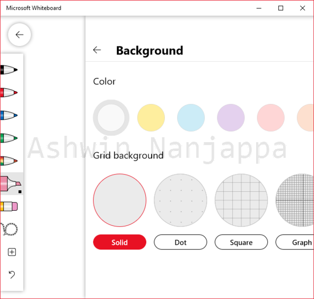

(First posted on: 2020-04-04T11:27:30.762797-07:00)

Microsoft Whiteboard is a virtual whiteboard that is available as a Windows app that can be installed from the Windows Store. The whiteboard can also be used from a browser by visiting whiteboard.microsoft.com.
Both the app and the website require you to have a Microsoft online account of some sort: on Live, Outlook or your company’s Microsoft account.
The whiteboard files are not stored locally, but to your Microsoft online account. So they are accessible from both the app and the website. There is no way to get access to the actual whiteboard files or understand its file format.
The website has a limited subset of the features available in the app. I found drawing in the browser to have a much higher latency compared to the app. Due to these reasons, I would recommend using the app at all times and only use the website when you have no choice.
When you open the app, you are in the My whiteboards section. Here you can create a new whiteboard or open existing whiteboards.
In the My Whiteboards section, you can click on the … on a whiteboard to give it a name, share it with others, export it or delete it.
One of the main features of this app is online collaboration: you can invite others to draw on the whiteboard with you.
Whiteboards can be exported to a PNG file (bitmap format) or a SVG file (vector format).
The website offers 4 markers with black, red, green and blue colors and an eraser. The marker tip width is fixed and so are the colors. There are no other features in the webiste.
The app has 6 marker pens. Each can be set to a color from the pre-selected palette of 16 colors. No other custom colors can be chosen. There are 4 thicknesses for the marker tip.
The app has a highlighter with 16 pre-selected colors and 4 tip thicknesses.
Other tools in the app include an eraser, a fantastic ruler (you need to use the mouse scrollwheel to rotate it), lasso (to select objects for cut-copy-paste) and insertion of image files and other files.
No idea what the Active pen feature does.
The Ink to Shape feature is awesome. It turns triangles, rectangles, circles and other shapes you draw into a nicer uniform shape.
The Ink to Table feature makes a spreadsheet-like table when you start dividing a square or rectangle into rows or columns with your drawing strokes.
The Object Snapping feature does what it says.
The Format Background allows you set the background color from 10 colors and choose a grid from several grid types: solid, dot, square, graph, hybrid, diamond, triangle, wide rule and narrow rule.
To be honest the app (not the website) has enough features to be suitable as a great sketching tool for software engineers. Missing features include choosing custom colors and layers.